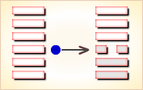
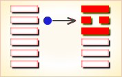

周易第1卦_乾卦(乾为天)_乾上乾下
如有疑问互相交流，微信：470283584
周易第1卦详解
乾卦原文
乾。元，亨，利，贞。
象曰：天行健，君子以自强不息。
白话文解释
乾卦：大吉大利，吉利的贞卜。
《象辞》说：天道刚健，运行不已。君子观此卦象，从而以天为法，自强不息。
《断易天机》解
乾象征天，六阳爻构成乾卦，为《易经》六十四卦之首。纯阳刚建，其性刚强，其行劲健，大通而至正，兆示大通而有利，但须行正道，方可永远亨通。
北宋易学家邵雍解
刚健旺盛，发育之功；完事顺利，谨防太强。
得此卦者，天行刚健，自强不息，名利双收之象，宜把握机会，争取成果。女人得此卦则有过于刚直之嫌。
台湾国学大儒傅佩荣解
时运：临事刚健，自强不息。
财运：施比受有福，不利买而利卖。
家宅：积善有余庆；女子过刚宜慎重。
身体：保健有恒。
传统解卦
这个卦是同卦（下乾上乾）相叠。象征天，喻龙（德才的君子），又象征纯粹的阳和健，表明兴盛强健。乾卦是根据万物变通的道理，以“元、亨、利、贞”为卦辞，表示吉祥如意，教导人遵守天道的德行。
大象：天行刚健，自强不息。
运势：飞龙在天，名利双收之象，宜把握机会，争取成果。
事业：大吉大利，万事如意，心想事成，自有天佑，春风得意，事业如日中天。但阳气已达顶点，盛极必衰，务须提高警惕，小心谨慎。力戒骄傲，冷静处世，心境平和，如是则能充分发挥才智，保证事业成功。
经商：十分顺利，有发展向上的大好机会。但切勿操之过急，宜冷静分析形势，把握时机，坚持商业道德，冷静对待中途出现的困难，定会有满意的结果。
求名：潜在能力尚未充分发挥，只要进一步努力，克服骄傲自满情绪，进业修德，以渊博学识和高尚品质，成君子之名。
婚恋：阳盛阴衰，但刚柔可相济，形成美满结果。女性温柔者更佳。
决策：可成就大的事业。坚持此卦的刚健、正直、公允的实质，修养德行，积累知识，坚定信念，自强不息，必能克服困难，消除灾难。
台湾张铭仁解卦
天：表示极阳之象，为纯卦、六冲卦，是大好、大坏的卦象。对事一般为吉象，为主管、负责任，可以任用担当大事，或开业当老板，得此卦都属吉象，只是必须有一个好的助理更佳，升官、考试、升迁都较有利。
解释：刚健稳固。
特性：积极，刚毅，努力，认真，有耐性，坚忍，正派，主动，慷慨，严律，重名誉。
运势：有地位擢升、名利双收之象，功名荣显得贵子。六亲和睦，凡事谦和为贵，可吉。
家运：繁昌兴隆，须小心口舌之争。
疾病：病情恶化，宜细心调养，注意头、脑、骨髓等病变。
胎孕：有不安之兆，宜小心保养。
子女：儿女健康，幸福有为。
周转：虽不成问题，尚宜心平气和来处理。
买卖：小利可得，大则勿取，勿太张扬为吉。
等人：一定会来。
寻人：已远走高飞，不易找到，在西北方向。
失物：可望寻回。
外出：利于出行，结伴而行更佳。
考试：有望取得好成绩。
诉讼：宜据理力争。
求事：有贵人提拔，可发展，称心。
改行：占得此卦不宜改行。
开业：开业者需要耐心观望。
周易第1卦初九爻详解
初九爻辞
初九。潜龙勿用。
象曰：潜龙勿用，阳在下也。
白话文解释
初九：潜藏的龙，无法施展。
《象辞》说：潜藏的龙，无法施展，因为初九阳爻处在一卦的下位，所以压抑难伸。
北宋易学家邵雍解
平：得此爻者，宜沉稳待机，若一动作即生灾疾，谋事不利，谨防小人。做官的会有阻力。经商的会有阻滞。女命则兴家业，孕生子。
台湾国学大儒傅佩荣解
时运：培养实力，等待机会。
财运：宜守不宜攻。
家宅：娶妻小心。
身体：保养为宜。
初九变卦

初九爻动变得周易第44卦：天风姤。这个卦是异卦（下巽上乾）相叠。乾为天，巽为风。天下有风，吹遍大地，阴阳交合，万物茂盛。姤（gǒu）卦与夬卦相反，互为“综卦”。姤即媾，阴阳相遇。但五阳一阴，不能长久相处。
周易第1卦九二爻详解
九二爻辞
九二。见龙在田，利见大人。
象曰：见龙在田，德施普也。
白话文解释
九二：龙出现在大地上，有利于会见贵族王公。
《象辞》说：龙出现在大地上，喻指君子走出了压抑的低谷，正开始谋取能够广泛施予德泽的社会地位。
北宋易学家邵雍解
吉：得此爻者，会得到贵人的提拔。做官的会遇到明主，身居要职。读书人考试能获得佳绩。经商者获利。女命逢之，则又富又贵。
台湾国学大儒傅佩荣解
时运：得贵人之助，有发展机会。
财运：开始涨价，官方采购。
家宅：婚姻大吉。
身体：运动健身。
九二变卦

九二爻动变得周易第13卦：天火同人。这个卦是异卦（下离上乾）相叠，乾为天，为君；离为火，为臣民百姓，上天下火，火性上升，同于天，上下和同，同舟共济，人际关系和谐，天下大同。
周易第1卦九三爻详解
九三爻辞
九三。君子终日乾乾，夕惕若；厉，无咎。
象曰：终日乾乾，反复道也。
白话文解释
九三：有才德的君子始终是白天勤奋努力，夜晚戒惧反省，虽然处境艰难，但终究没有灾难。
《象辞》说：君子整日里勤奋努力，意思是反复行道，坚持不舍。
北宋易学家邵雍解
平：得此爻者，会往来不停，财利难获，凡事不认真计划，躁动者会有损失。做官的会身兼重职，且事多繁冗，如果能保持忧虑和谨慎的态度则没有过失。女命逢之，性躁，难成为贤内助。
台湾国学大儒傅佩荣解
时运：功名未显，戒慎免咎。
财运：日夜防范，可脱险获利。
家宅：勤俭保家；不宜攀结高亲。
身体：小心保养。
九三变卦

九三爻动变得周易第10卦：天泽履。这个卦是异卦（下兑上乾）相叠，乾为天，兑为泽，以天喻君，以泽喻民，原文：“履（踩）虎尾，不咥（咬）人”。因此，结果吉利。君上民下，各得其位。兑柔遇乾刚，所履危。履意为实践，卦义是脚踏实地的向前进取的意思。
周易第1卦九四爻详解
九四爻辞
九四。或跃在渊，无咎。
象曰：或跃在渊，进无咎也。
白话文解释
九四：龙也许跳进深潭，没有灾难。
《象辞》说：龙也许跳进深潭，表示可以有所作为而没有灾难。
北宋易学家邵雍解
平：得此爻者，百为艰难。做官的会停缺待职，等待机会。女命逢之，则安乐富贵也。
台湾国学大儒傅佩荣解
时运：一举成名。
财运：物价高涨，可保无咎。
家宅：有一时振兴之象。
身体：继续健身。
九四变卦

九四爻动变得周易第9卦：风天小畜。这个卦是异卦（下乾上巽）相叠，乾为天，巽为风。喻风调雨顺，谷物滋长，故卦名小畜（蓄）。力量有限，须待发展到一定程度，才可大有作为。
周易第1卦九五爻详解
九五爻辞
九五。飞龙在天，利见大人。
象曰：飞龙在天，大人造也。
白话文解释
九五：龙飞腾在空中，有利于会见贵族王公。
《象辞》说：龙飞腾在空中，意味着君子大有所为。
北宋易学家邵雍解
吉：得此爻者，会遇到贵人，谋遂志得。做官的会飞黄腾达。女命则兼男权，难免孤独。
台湾国学大儒傅佩荣解
时运：直上云霄。
财运：五谷之类的贸易，物价飞升，有官府支持。
家宅：富贵之家。
身体：蒙天所召，不吉。
九五变卦

九五爻动变得周易第14卦：火天大有。这个卦是异卦（下乾上离）相叠。上卦为离，为火；下卦为乾，为天。火在天上，普照万物，万民归顺，顺天依时，大有所成。
周易第1卦上九爻详解
上九爻辞
上九。亢龙有悔。
象曰：亢龙有悔，盈不可久也。
白话文解释
上九：升腾到极限的龙会有灾祸之困。
《象辞》说：升腾到极限的龙会有灾祸之困，这是警戒人们崇高、盈满是不可能长久保持的。
北宋易学家邵雍解
凶：得此爻者，有过刚取凶之祸，五十以后者不寿。做官的会退职，或遭贬。女命逢之，其性必悍，难成为贤内助。
台湾国学大儒傅佩荣解
时运：由满招损，退而自省。
财运：过盈则必有亏。
家宅：婚嫁不利。
身体：命在旦夕。
上九变卦
上九爻动变得周易第43卦：泽天夬。这个卦是异卦（下乾上兑）相叠。乾为天为健；兑为泽为悦。泽气上升，决注成雨，雨施大地，滋润万物。五阳去一阴，去之不难，决（去之意）即可，故名为夬（guài），夬即决。